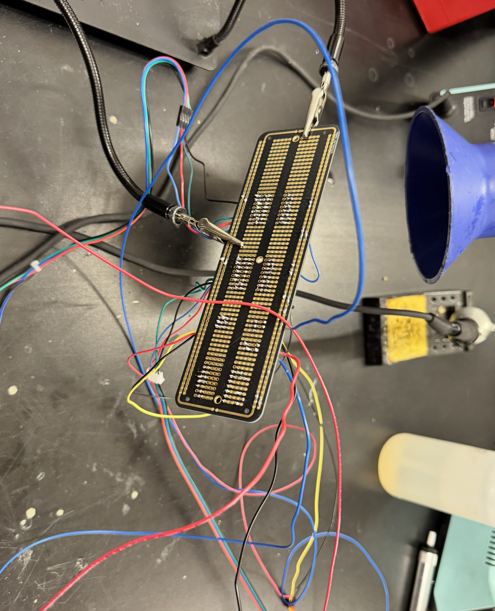

<div class="textcontainer">
<p class="margin"> </p>
<h3>Weeks 10-12: Machine Building</h3>
<h4>Assignment: Build a Drawing Robot</h4>
<p class="margin"> </p>
<p><strong>Documentation:</strong></p>
<pre class="margin">
For this project, our team decided to build a drawing robot that one could mess with while it is drawing. The idea was to have an eccentric motor attached to the cantilevered drawing arm
that you could yell at, and if you yelled loud enough then the robot would get distracted and not be able to draw cleanly. We wanted to make the drawing robot as best as we could on the baseline level so that the
"distraction", so to speak, would be as effective as possible. We also considered having another aspect which you could blind the robot, and by blinding it, it would just start to circle about randomly instead of drawing correctly.
Overall, the goal was to make somewhat of a reactive robot, something that could mirror the behavior of a human in a fun and interesting way that is interactive, instead of just watching it draw. In the end, we struggled overall getting the drawing
machine to work in its entirety, but did end up getting it to draw based on manual inputs. The collection of failures taught us lots of lessons about the complexity of hard work, teamwork in engineering projects, and hardware and software
debugging methods. Below is some documentation of the process, including information about the starting point at soldering, and the ending point with all of the errors in between.
</pre>
<p class="margin"> </p>
<p><em>SOLDERING</em></p>
<p></p>
<p class="margin"> </p>
<p><em>SOLDERED BOARD</em></p>
<img src="./Soldered Board.png" alt="Soldered Board" style="max-width: 100%; height: auto;">
<p class="margin"> </p>
<p><em>SOLDER ISSUES</em></p>
<img src="./Solder Issues.png" alt="Solder Issues" style="max-width: 100%; height: auto;">
<p class="margin"> </p>
<p><em>COMPLETE SETUP</em></p>
<img src="./Complete Setup.png" alt="Complete Setup" style="max-width: 100%; height: auto;">
<p class="margin"> </p>
<p><strong>Documentation:</strong></p>
<pre class="margin">
As mentioned above, one of the early problems that we faced was the soldering component. As beginners to soldering, it is hard enough as it is sometimes to get good connections, but trying to map out a more complex breadboard proved
to be a tall challenge. From issues with wire stripping to problems with the setup itself (not to mention the flying hot solder when a mistake is made), it was a really complex challenge but worthwhile. The whole thing is
like a complex collection of electronics highways that are sensitive to damage, incorrect treatment, and very detail-dependent. While some mistakes were made, on-the-fly adaptation like adjusting to use different pins,
or breaking out the solder cleaning wire was a great way to learn and back up before forging ahead. Another important lesson learned was that it is really crucial that the hardware is movable and flexible. Because mistakes needed to be fixed
and new components needed to be added, it was really important to be able to unwire things, adjust, and plug back in. The convenience of a plastic breadboard is not to be understated, but once the proto board was complete,
it was reliable, strong, and really cool to have come together.
</pre>
<p class="margin"> </p>
<p><em>CAPACITOR EXPLOSION</em></p>
<img src="./Capacitor Explosion.png" alt="Capacitor Explosion" style="max-width: 100%; height: auto;">
<p class="margin"> </p>
<p><em>ARDUINO TESTING</em></p>
<img src="./Arduino Testing.png" alt="Arduino Testing" style="max-width: 100%; height: auto;">
<p class="margin"> </p>
<p><em>ARDUINO CODE</em></p>
<pre><code style="user-select: all; display: block; padding: 1em; background:#000000; color: #ffffff; border-radius: 4px; overflow-x: auto;">
</code></pre>
<p class="margin"> </p>
<p><em>SOLDER ISSUES</em></p>
<img src="./Solder Issues.png" alt="Solder Issues" style="max-width: 100%; height: auto;">
<p class="margin"> </p>
<p><em>DUD MOTOR DRIVERS AND ESP32C3</em></p>
<img src="./Dud Motor Drivers and ESP32C3.png" alt="Dud Motor Drivers and ESP32C3" style="max-width: 100%; height: auto;">
<p class="margin"> </p>
<p><em>WIRE DEBUGGING</em></p>
<img src="./Wire Debugging.png" alt="Wire Debugging" style="max-width: 100%; height: auto;">
<p class="margin"> </p>
<p><strong>Documentation:</strong></p>
<pre class="margin">
Now, of course, once everything was set up and soldered, there were naturally a slew of other issues to face. For example, the first iteration of the capacitor soldering caused them to explode due to
a reverse in polarity. It was a really important lesson in both safety and design. Mistakes like that are really hard to catch at first in a large project, but once they are made they are never made again.
Unfortunately, however, this explosion likely caused a surge on the board which fried our ESP32-C3 and a motor driver. Our bad luck caused us to also have used another dud motor driver alongside the one we fried.
Once we went back and debugged it all, we had all of a sudden another problem. The switching of two loose wires in a smaller breadboard that was used to control our eccentric motor when microphone input is read (shouting at the robot)
caused a second ESP32-C3 to be fried because 5V voltage went right back into it through the wrong input. Another setback was really rough to fight through, but eventually we got it to work.
</pre>
<p class="margin"> </p>
<p><em>MACHINE REACTING</em></p>
<video src="./Motor Reacting.MOV" controls style="max-width: 100%;"></video>
<p class="margin"> </p>
<p><em>MACHINE MOVING</em></p>
<video src="./Machine Moving.MOV" controls style="max-width: 100%;"></video>
<p class="margin"> </p>
<p><em>MACHINE WORKING</em></p>
<video src="./Machine Working.MOV" controls style="max-width: 100%;"></video>
<p class="margin"> </p>
<p><em>DRAWING</em></p>
<video src="./Drawing.mov" controls style="max-width: 100%;"></video>
<p class="margin"> </p>
<p><strong>Documentation:</strong></p>
<pre class="margin">
From the collection of videos above, you can see the robot reacting to shouts, and the robot moving around and drawing. At first, we had our limit switches failing and the stepper motors that we were using slipping in their pulleys,
but one by one the problems got diagnosed. Soon, we were able to debug the code and instead of the motors driving the pen around to one place and then continuing to drift off until it arrived home (where the two limit switches were, one of our successful locations),
we could control it manually. While we were not able to get it to draw a circle by programming, we could get it to do lines and create shapes. We were also unable to get the eccentric motor to bother the drawing machine enough to reduce the quality of its output.
Overall, it was a really fun project for us. We improved our teamwork and communication skills, and we definitely learned a lot about the difficulties of having many people playing telephone and trying to coordinate to work at different times
and on different aspects of the project. In the end, we were all extremely happy to have gotten it to move reliably after all of the challenges that we faced, and while we were not able to get it to be distracted, maybe that is best in the grand scheme of things
so that there is another goal to finish and another place to improve.
</pre>
<p class="margin"> </p>
</div>